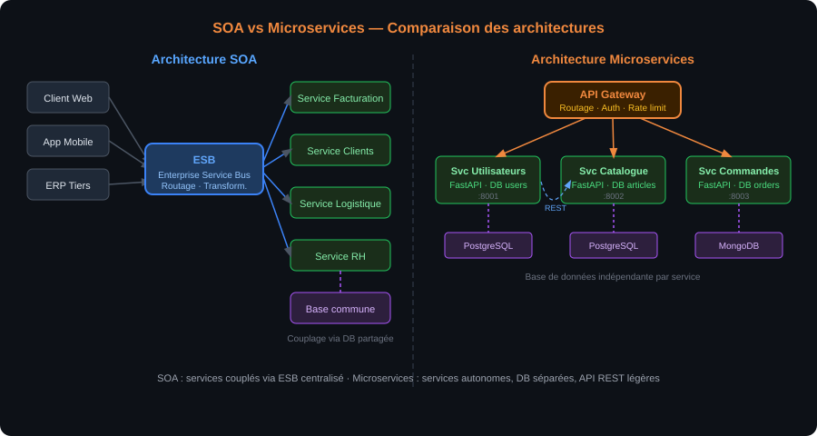
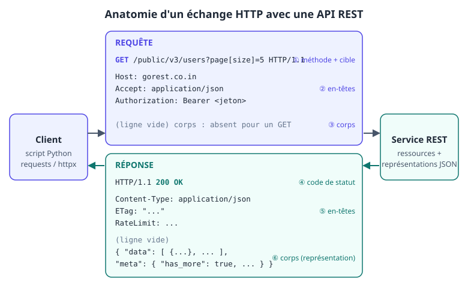
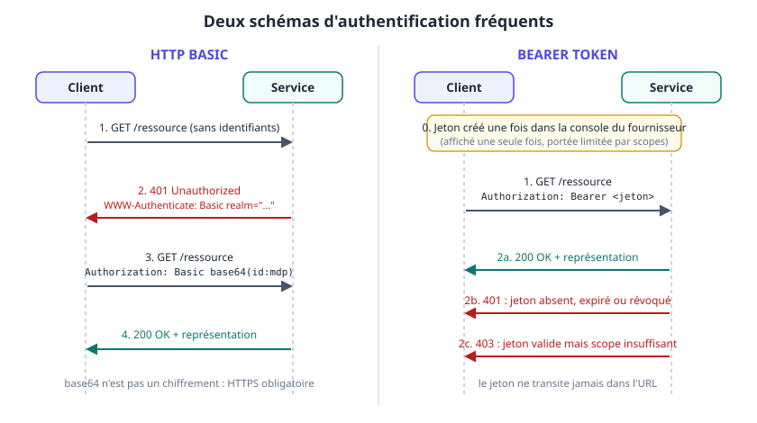
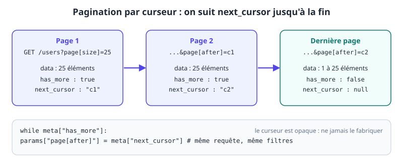
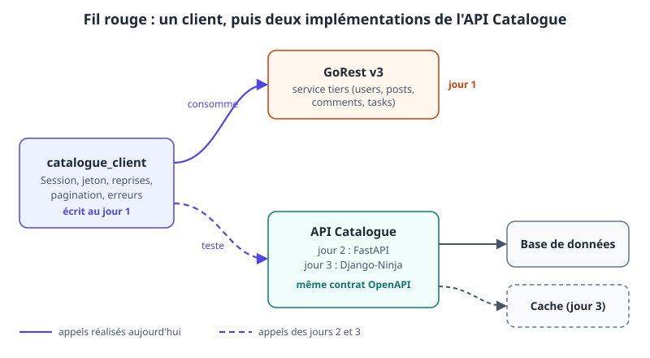

À la fin de la journée, les stagiaires sont capables de :
- situer les web services, l'architecture orientée service (SOA), REST et OpenAPI dans une architecture d'entreprise ;
- lire une requête et une réponse HTTP (méthode, en-têtes, statut, corps) et choisir le bon verbe et le bon code ;
- interroger une API REST avec
requestsethttpx: paramètres, filtres, tri, pagination ; - authentifier les appels (BASIC, Bearer) sans exposer de secret dans le code ni dans Git ;
- interpréter les erreurs (401, 403, 404, 422, 429) et rendre un client robuste (délais d'attente, reprises, idempotence) ;
- livrer un module client réutilisable,
catalogue_client, qui servira de client de test les jours 2 et 3.
Livrable de la journée
Un dépôt api-catalogue/ contenant :
- un environnement virtuel et un fichier
requirements.txt; - un jeton d'API stocké hors du code (
.env, ignoré par Git) ; - le module
catalogue_client/gorest.py: session HTTP configurée, authentification Bearer, reprises automatiques, exceptions typées, pagination par générateur ; - trois scripts d'atelier (
explorer.py,basic_auth.py,main.py) ; - un jeu de commandes
curl.exede référence.
Le service cible est GoRest (gorest.co.in), une API publique de test : gratuite, sans carte bancaire, avec lecture sans jeton et écriture avec jeton. Ses quatre ressources principales (users, posts, comments, tasks) jouent le rôle des stagiaires, fiches, commentaires et tâches de préparation de session du catalogue. Les mêmes noms de champs serviront de modèle pour l'API que les stagiaires écriront le jour 2.
| Heure | Séquence | Blocs programme |
|---|---|---|
| 09h30 – 09h45 | Accueil, tour de table, vérification des postes (Python, accès réseau) | — |
| 09h45 – 10h20 | Théorie — Web services, SOA, REST, OpenAPI | Bloc 1 |
| 10h20 – 10h55 | Pratique — Premiers appels avec curl.exe et un client graphique |
Bloc 1 |
| 10h55 – 11h10 | Pause | |
| 11h10 – 12h30 | Pratique guidée — requests, paramètres, en-têtes, JSON |
Bloc 2 |
| 12h30 – 13h30 | Déjeuner | |
| 13h30 – 14h45 | Pratique guidée — authentification, erreurs, reprises, pagination | Bloc 2 |
| 14h45 – 15h00 | Pause | |
| 15h00 – 16h45 | Atelier — Interroger des services web ouverts et avec authentification | Bloc 2 |
| 16h45 – 17h30 | Démonstrations, synthèse, aperçu du jour 2 | — |
La théorie ne dépasse jamais 20 minutes d'affilée. Chaque notion est suivie d'une manipulation : le formateur démontre, les stagiaires reproduisent dans leur éditeur (code-along). Les sections marquées 🛠️ Micro-atelier durent 5 à 10 minutes.
1.1 Qu'est-ce qu'un web service ?
Un web service (service web) est un programme qui rend une fonction ou des données accessibles à un autre programme, à travers un réseau, selon trois conventions partagées :
- un protocole de transport standard (HTTP dans la quasi-totalité des cas) ;
- un format d'échange standard (JSON, XML) ;
- un contrat qui décrit ce que le service accepte et renvoie.
Le service ne sait rien du langage du client, et le client ne sait rien du langage du service. Un script Python peut interroger un service écrit en Java, en Go ou en PHP, et inversement. C'est cela, l'interopérabilité.
Un appareil se branche sur n'importe quelle prise murale sans connaître la centrale qui produit le courant. Le web service joue le rôle de la prise : la forme de la fiche (HTTP, JSON, contrat) est standard, la production derrière la prise est un détail d'implémentation.
Où les trouve-t-on en entreprise ? Quelques situations typiques pour des équipes de développement :
| Besoin | Exemple de service consommé |
|---|---|
| Paiement en ligne | API d'un prestataire de paiement |
| Géolocalisation, adresses | API d'adresses ou de cartographie |
| Notifications | API d'envoi d'e-mails ou de SMS |
| Échange entre applications internes | API d'un ERP, d'un CRM, d'un annuaire |
| Données ouvertes | API de portails open data |
| Intelligence artificielle | API de modèles de langage |
Dans tous ces cas, le développeur est consommateur d'une API qu'il n'a pas écrite. Les jours 2 et 3, il devient fournisseur.
1.2 Les grandes familles de services web
| Famille | Format d'échange | Description du contrat | Usage courant |
|---|---|---|---|
| SOAP | XML (enveloppe SOAP) | WSDL | systèmes d'entreprise historiques, banques, administrations |
| REST | JSON le plus souvent, XML possible | OpenAPI (Swagger) | API publiques et internes, applications mobiles, microservices |
| GraphQL | JSON | schéma typé | clients qui choisissent précisément les champs à recevoir |
| gRPC | Protocol Buffers sur HTTP/2 | fichier .proto |
communication interne haute performance entre services |
Cette formation se concentre sur REST, qui domine aujourd'hui les API exposées par les éditeurs et les équipes web. Les trois autres familles restent utiles à reconnaître : un projet réel combine souvent plusieurs styles.
« API REST » est devenu un terme générique qui désigne en pratique « API HTTP qui renvoie du JSON ». Peu d'API respectent toutes les contraintes REST de la thèse d'origine (section 1.4). Le formateur utilisera « API REST » au sens courant, et précisera quand une contrainte précise est en jeu.
1.3 Architecture orientée service (SOA)

La SOA (Service-Oriented Architecture) est un style d'architecture dans lequel un système d'information est découpé en services autonomes, qui coopèrent par des messages plutôt que par des appels de fonctions internes.
Les composantes à connaître :
| Composante | Rôle |
|---|---|
| Fournisseur (provider) | expose le service et implémente la logique |
| Consommateur (consumer) | appelle le service, sans connaître son implémentation |
| Contrat | décrit les opérations, les paramètres, les formats, les erreurs (WSDL pour SOAP, OpenAPI pour REST) |
| Registre ou catalogue | permet de découvrir les services disponibles (annuaire d'entreprise, portail développeur) |
| Bus ou passerelle | route, sécurise, journalise et limite les appels (API gateway, ESB) |
Principes qui reviennent dans toutes les définitions de la SOA :
- couplage faible : le consommateur dépend du contrat, jamais du code du fournisseur ;
- réutilisabilité : un même service sert plusieurs consommateurs ;
- autonomie : un service se déploie, se met à jour et tombe en panne indépendamment des autres ;
- découverte et composition : on assemble des services pour construire un processus métier.
Un maçon, un électricien et un plombier se coordonnent par un plan et des interfaces (emplacement des gaines, arrivées d'eau), pas en travaillant dans la tête les uns des autres. Le contrat joue le rôle du plan : tant qu'il est respecté, chacun peut changer d'outils ou d'équipe.
SOA et microservices. Les microservices reprennent l'idée de services autonomes, avec des services plus petits, déployés indépendamment, souvent derrière des API REST. On y retrouve les mêmes questions : contrat, versionnement, authentification, tolérance aux pannes. Ce sont précisément les sujets des trois jours.
1.4 REST : un style d'architecture
REST (REpresentational State Transfer) est un style d'architecture décrit par Roy Fielding dans sa thèse de doctorat (2000). Il s'appuie sur les mécanismes du Web : URL, verbes HTTP, codes de statut, en-têtes.
Les contraintes du style :
| Contrainte | Signification pratique |
|---|---|
| Client–serveur | l'interface et le stockage évoluent séparément |
| Sans état (stateless) | chaque requête contient tout ce qu'il faut pour être traitée ; le serveur ne mémorise pas le client entre deux appels |
| Cache | les réponses indiquent si elles sont réutilisables (ETag, Cache-Control) |
| Interface uniforme | ressources identifiées par URL, manipulées par des représentations, avec des verbes standard |
| Système en couches | proxys, passerelles et répartiteurs de charge s'intercalent sans que le client le sache |
| Code à la demande (optionnel) | le serveur peut envoyer du code exécutable (rarement utilisé) |
Vocabulaire de base :
- une ressource est une entité identifiable : un utilisateur, une formation, une session ;
- une URL (ou URI) identifie la ressource :
/public/v3/users/0190a8e4-…; - une représentation est la forme transmise de la ressource, ici un document JSON ;
- un verbe HTTP exprime l'action : lire (
GET), créer (POST), modifier (PATCH,PUT), supprimer (DELETE).
Des noms pluriels pour les collections (/users, /posts), un identifiant pour un élément (/users/{id}), des ressources liées en sous-chemin ou en filtre (/posts?filter[user_id]=…). Le verbe est dans la méthode HTTP, pas dans l'URL : DELETE /users/42, et non GET /deleteUser?id=42.
Niveaux de maturité (modèle de Richardson). Grille utile pour évaluer une API existante :
| Niveau | Caractéristique | Exemple |
|---|---|---|
| 0 | un seul point d'entrée, tout passe par POST |
POST /api avec l'action dans le corps |
| 1 | des ressources distinctes | /users, /posts |
| 2 | verbes HTTP et codes de statut utilisés correctement | GET /users, POST /users → 201 |
| 3 | liens hypermédia entre ressources (HATEOAS) | la réponse contient les URL des actions possibles |
La plupart des API professionnelles visent le niveau 2, et c'est la cible du fil rouge. GoRest ajoute des liens de pagination dans l'en-tête Link (RFC 8288), un début d'hypermédia.
1.5 Anatomie d'un échange HTTP
Un appel d'API est un échange HTTP : une requête, une réponse.

La requête comprend :
- une ligne de requête : méthode, cible (chemin et paramètres), version du protocole ;
- des en-têtes (headers) :
Accept,Content-Type,Authorization, etc. ; - un corps (body), facultatif : le document JSON envoyé avec
POSTouPATCH.
La réponse comprend un code de statut, des en-têtes et un corps.
Les méthodes HTTP à connaître :
| Méthode | Action | Sûre | Idempotente | Corps de requête |
|---|---|---|---|---|
GET |
lire une ressource ou une collection | oui | oui | non |
HEAD |
lire uniquement les en-têtes | oui | oui | non |
POST |
créer une ressource ou déclencher un traitement | non | non | oui |
PUT |
remplacer entièrement une ressource | non | oui | oui |
PATCH |
modifier partiellement une ressource | non | selon l'API | oui |
DELETE |
supprimer une ressource | non | oui | non |
OPTIONS |
connaître les méthodes autorisées (CORS) | oui | oui | non |
- Sûre : la méthode ne modifie pas l'état du serveur.
- Idempotente : répéter la requête N fois produit le même état final qu'une seule fois. C'est la propriété qui autorise une reprise automatique après une coupure réseau (section 2.8).
POST n'est pas idempotentUn POST rejoué après un délai d'attente peut créer deux ressources. Les API sérieuses proposent un en-tête Idempotency-Key, que GoRest accepte sur ses POST. Nous l'utiliserons dans l'atelier.
Les codes de statut se lisent par famille :
| Famille | Sens | Codes à connaître |
|---|---|---|
2xx |
succès | 200 OK, 201 Created (avec Location), 204 No Content |
3xx |
redirection ou cache | 301, 302, 304 Not Modified |
4xx |
erreur du client | 400, 401, 403, 404, 409, 412, 422, 429 |
5xx |
erreur du serveur | 500, 502, 503, 504 |
Les en-têtes qui comptent pour un client d'API :
| En-tête | Sens | Sens de circulation |
|---|---|---|
Accept |
format de réponse souhaité (application/json) |
requête |
Content-Type |
format du corps envoyé ou reçu | les deux |
Authorization |
identification (BASIC, Bearer) | requête |
User-Agent |
identifie le client (utile aux fournisseurs) | requête |
ETag, If-Match, If-None-Match |
version d'une ressource, cache et concurrence | les deux |
Link |
URL des pages suivantes ou précédentes | réponse |
Retry-After |
délai avant de réessayer (après 429 ou 503) |
réponse |
RateLimit, RateLimit-Policy |
quota restant et politique de limitation | réponse |
1.6 Décrire et documenter une API : OpenAPI et Swagger
OpenAPI est la spécification standard pour décrire une API REST dans un document YAML ou JSON : chemins, méthodes, paramètres, schémas de données, codes de réponse, schémas de sécurité. Swagger désigne l'ensemble d'outils historiquement associé : Swagger UI (documentation interactive), Swagger Editor, générateurs de code.
Un extrait minimal, pour savoir le lire :
openapi: 3.1.0
info:
title: API Catalogue
version: "1.0"
paths:
/formations:
get:
summary: Lister les formations
parameters:
- name: duree_max
in: query
schema: { type: integer }
responses:
"200":
description: Liste paginée
content:
application/json:
schema:
type: array
items: { $ref: "#/components/schemas/Formation" }
components:
schemas:
Formation:
type: object
required: [code, titre]
properties:
code: { type: string, example: PYT100614-F }
titre: { type: string }
duree_jours: { type: integer }
Deux démarches de conception :
| Démarche | Principe | Quand l'utiliser |
|---|---|---|
| Contract-first | on écrit le contrat OpenAPI, puis on génère squelettes et clients | API partagée entre plusieurs équipes |
| Code-first | on écrit le code, le framework génère le contrat | équipe unique, itérations rapides |
FastAPI (jour 2) et Django-Ninja (jour 3) sont code-first : ils produisent automatiquement le document OpenAPI et une page Swagger UI à partir des annotations de type Python. GoRest publie lui aussi une spécification OpenAPI 3.1 et une page Swagger UI (gorest.co.in/docs/api).
Avant d'écrire une ligne de client, ouvrir la page Swagger UI ou la référence du fournisseur. Les champs obligatoires, les valeurs autorisées et les codes d'erreur y figurent.
1.7 Outils de test de services web
Avant de coder un client, on explore l'API avec un outil interactif :
| Outil | Type | Intérêt |
|---|---|---|
curl |
ligne de commande | présent partout, copiable dans la documentation et les tickets |
| HTTPie | ligne de commande | syntaxe plus lisible que curl |
| Postman, Bruno | application graphique | collections d'appels, variables d'environnement, partage en équipe |
| Extension VS Code REST Client | fichiers .http |
requêtes versionnées dans le dépôt, exécutées depuis l'éditeur |
| Swagger UI | navigateur | tester depuis la documentation OpenAPI |
| Console GoRest | navigateur | console de test du fournisseur, sans installation |
curl n'est pas curl.exeDans Windows PowerShell 5.1, curl est un alias de Invoke-WebRequest, dont la syntaxe diffère. Les commandes de ce support utilisent curl.exe pour appeler le vrai programme. Sous Linux et macOS, curl suffit.
🛠️ Micro-atelier 1 — Premiers appels avec curl.exe (35 min)
Objectif : lire une requête et une réponse HTTP complètes, sans écrire de code.
Étape 1 — Une collection, sans jeton. Les lectures GoRest ne demandent pas de jeton. L'option -g désactive l'interprétation des crochets par curl (sinon page[size] est pris pour une plage) :
curl.exe -g "https://gorest.co.in/public/v3/users?page[size]=3"
Étape 2 — Voir la conversation HTTP complète. -i affiche les en-têtes de réponse, -v affiche aussi la requête envoyée :
curl.exe -g -i "https://gorest.co.in/public/v3/users?page[size]=3"
curl.exe -g -v "https://gorest.co.in/public/v3/users?page[size]=3"
À repérer dans la réponse : le code de statut, Content-Type, ETag, RateLimit-Policy et RateLimit, l'objet meta du corps (has_more, next_cursor), et l'éventuel en-tête Link.
Étape 3 — Un élément. Copier un id de l'étape 1 :
curl.exe "https://gorest.co.in/public/v3/users/<id-copié>"
Étape 4 — Filtres, tri, champs. Les paramètres de liste sont décrits dans la référence de la ressource :
curl.exe -g "https://gorest.co.in/public/v3/users?filter[status]=active&sort=name&fields[users]=id,name&page[size]=5"
curl.exe -g "https://gorest.co.in/public/v3/posts?include=user,comments&page[size]=2"
Étape 5 — Provoquer des erreurs volontairement. GoRest propose des points d'entrée de test :
curl.exe -i "https://gorest.co.in/public/v3/http/status/404"
curl.exe -i "https://gorest.co.in/public/v3/http/status/429"
curl.exe -g "https://gorest.co.in/public/v3/http/delay/2000"
Étape 6 — Rejouer dans un client graphique. Reproduire l'étape 4 dans Postman, Bruno ou la console GoRest, et comparer.
Checklist de fin de micro-atelier
- [ ] le stagiaire sait lire le statut, les en-têtes et le corps d'une réponse ;
- [ ] il distingue une collection (
data+meta) d'un élément seul ; - [ ] il a obtenu un
404et un429volontairement et lu leur corps ; - [ ] il sait pourquoi
-gest nécessaire avec des crochets.
Questions de contrôle (à poser à l'oral, réponses ci-dessous) :
- Quelle contrainte REST impose d'envoyer le jeton à chaque requête ?
PUTouPATCHpour changer uniquement l'adresse e-mail d'un utilisateur ?- Pourquoi une reprise automatique est-elle risquée sur un
POST? - Que signifie
304 Not Modifiedpour un client ?
| Question | Réponse |
|---|---|
| 1 | Sans état : le serveur ne conserve pas de session, chaque requête porte son Authorization. |
| 2 | PATCH : modification partielle. PUT remplace la ressource entière. |
| 3 | POST n'est pas idempotent : si la première requête a abouti avant la coupure, la reprise crée un doublon. |
| 4 | La copie locale (identifiée par son ETag) est toujours valide : aucun corps n'est renvoyé. |
2.1 Préparer l'environnement de travail (10 min)
Prérequis techniques : Python 3.10 ou supérieur (3.12 recommandé), un éditeur (VS Code, PyCharm), un accès Internet sortant vers gorest.co.in et httpbin.org (atelier BASIC).
# Linux, macOS
mkdir api-catalogue && cd api-catalogue
python3 -m venv .venv
source .venv/bin/activate
# Windows PowerShell
mkdir api-catalogue; cd api-catalogue
python -m venv .venv
.venv\Scripts\Activate.ps1
python --version # 3.10 minimum
pip install requests httpx python-dotenv pytest
pip freeze > requirements.txt
git init
Arborescence cible de la journée :
api-catalogue/
├── .env # secrets locaux — jamais versionné
├── .gitignore
├── requirements.txt
├── catalogue_client/
│ ├── __init__.py
│ ├── config.py
│ └── gorest.py
├── explorer.py
├── basic_auth.py
└── main.py
# .gitignore (à créer avant le premier commit)
printf '.venv/\n__pycache__/\n*.pyc\n.env\n' > .gitignore
Un secret commité reste dans l'historique, même après suppression du fichier. Le fichier .env est dans .gitignore avant le premier git add. Si un jeton a fuité : le révoquer dans la console du fournisseur, puis en créer un nouveau.
Créer le jeton GoRest (une fois, en début de séance) :
- se connecter à GoRest avec un compte Google, Microsoft ou GitHub ;
- ouvrir la page Tokens et créer un jeton (un jeton par projet) ;
- accorder les portées (
scopes) nécessaires à l'atelier : lecture et écriture surusers, et au minimum lecture surposts,commentsettasks; - copier le jeton immédiatement : il n'est affiché qu'une seule fois.
Le fournisseur précise qu'il s'agit d'une API de test publique : aucune donnée personnelle réelle ne doit y être envoyée, et les données sont réinitialisées toutes les 3 heures.
# .env
GOREST_TOKEN=colle-ici-le-jeton
2.2 Choisir une bibliothèque cliente HTTP
| Bibliothèque | Nature | Points forts | Limites |
|---|---|---|---|
urllib.request |
bibliothèque standard | aucune dépendance | verbeuse, JSON et sessions à gérer à la main |
http.client |
bibliothèque standard | contrôle total du protocole | très bas niveau |
requests |
tierce, synchrone | API très lisible, sessions, adaptateurs, écosystème immense | pas d'async, pas de HTTP/2 |
httpx |
tierce, sync et async |
API proche de requests, async, HTTP/2 en option, base_url natif |
écosystème d'extensions plus récent |
aiohttp |
tierce, async |
client et serveur asynchrones | API différente de requests |
Choix pour la journée : requests pour construire le client (section 2.3 à 2.10), puis httpx pour les appels concurrents (section 2.11). Les deux se ressemblent assez pour qu'une migration soit mécanique.
2.3 Premier appel avec requests
import requests
URL = "https://gorest.co.in/public/v3/users"
r = requests.get(URL, params={"page[size]": 5}, timeout=10)
print(r.status_code) # 200
print(r.headers["Content-Type"]) # application/json...
print(r.url) # URL réellement envoyée
print(r.elapsed.total_seconds()) # durée de l'échange
corps = r.json()
for u in corps["data"]:
print(u["id"], u["name"], u["status"])
print(corps["meta"]) # has_more, next_cursor, total
L'objet Response expose :
| Attribut ou méthode | Contenu |
|---|---|
status_code |
code HTTP (entier) |
ok |
True si le code est inférieur à 400 |
headers |
en-têtes de réponse (insensibles à la casse) |
text |
corps décodé en str |
content |
corps brut en bytes |
json() |
corps décodé en objets Python (lève ValueError si ce n'est pas du JSON) |
url |
URL finale, redirections et encodage compris |
elapsed |
durée entre l'envoi et la réception des en-têtes |
history |
liste des redirections suivies |
request |
requête envoyée (méthode, URL, en-têtes) |
raise_for_status() |
lève HTTPError si le code est 4xx ou 5xx |
timeout n'a pas de valeur par défautSans timeout, requests peut attendre indéfiniment une réponse qui n'arrive pas. Un script de production bloqué sur un appel réseau est un incident classique. Tout appel porte un timeout. La section 2.8 détaille la forme (connexion, lecture).
🛠️ Micro-atelier 2 — Inspecter ce qui est vraiment envoyé (10 min)
requests permet de construire la requête sans l'envoyer : très utile pour comprendre l'encodage des paramètres.
import requests
req = requests.Request(
"GET",
"https://gorest.co.in/public/v3/users",
params={"filter[status]": "active", "sort": "name", "page[size]": 3},
headers={"Accept": "application/json"},
)
prepared = req.prepare()
print(prepared.method, prepared.url)
print(dict(prepared.headers))
print(prepared.body) # None pour un GET
## pour éxécuter la requête préparée
s = requests.Session()
response = s.send(prepared, timeout=10)
print(response.status_code, response.text)
À constater : les crochets sont encodés en %5B et %5D dans prepared.url. L'encodage est équivalent pour le serveur, qui décode les paramètres avant de les interpréter.
Consigne : modifier params pour demander uniquement les champs id et email (fields[users]=id,email), puis envoyer la requête avec requests.Session().send(prepared, timeout=10) et afficher le résultat.
2.4 Envoyer des paramètres : requête, chemin, en-têtes, corps
Une requête transporte des informations à quatre endroits :
| Emplacement | Usage | Syntaxe requests |
|---|---|---|
| Chemin (path) | identifier une ressource | f-string : f"{base}/users/{user_id}" |
| Chaîne de requête (query) | filtrer, trier, paginer | params={...} |
| En-têtes | format, authentification, versions | headers={...} |
| Corps (body) | données à créer ou modifier | json={...} |
Paramètres de requête : params encode les valeurs, y compris les espaces et les caractères accentués.
params = {
"filter[status]": "active",
"sort": "-created_at", # tri décroissant
"fields[users]": "id,name", # champs retournés
"page[size]": 10,
}
r = requests.get(URL, params=params, timeout=10)
GoRest attend une liste séparée par des virgules (filter[status]=active,inactive). Il faut donc passer la chaîne "active,inactive", et non une liste Python : requests encoderait la liste en paramètres répétés (status=a&status=b), une convention différente selon les API. Toujours lire la référence du fournisseur.
Paramètres de chemin : un identifiant venu de l'extérieur (saisie, fichier) ne se colle pas tel quel dans une URL.
from urllib.parse import quote
def url_utilisateur(base: str, user_id: str) -> str:
return f"{base}/users/{quote(user_id, safe='')}"
quote(..., safe="") neutralise les /, ? et # qui détourneraient la requête vers un autre chemin.
En-têtes : Accept: application/json indique le format attendu. requests ajoute lui-même Content-Type: application/json quand on utilise json=.
Corps : deux formes à ne pas confondre.
# JSON : Content-Type: application/json
requests.post(URL, json={"name": "Léa", "email": "lea@example.com"}, timeout=10)
# Formulaire : Content-Type: application/x-www-form-urlencoded
requests.post(URL, data={"name": "Léa"}, timeout=10)
Une API REST moderne attend du JSON : on utilise json=, jamais data=json.dumps(...) (qui n'ajoute pas l'en-tête Content-Type).
2.5 Gérer les paramètres d'accès à l'API
Un client sérieux ne répète pas l'URL de base, le jeton et le délai d'attente dans chaque appel. Ces paramètres d'accès sont regroupés dans un objet de configuration, alimentés par l'environnement.
# catalogue_client/config.py
import os
from dataclasses import dataclass, field
from typing import Self
from dotenv import load_dotenv
load_dotenv() # lit .env s'il existe, sans écraser les variables déjà définies
@dataclass(frozen=True, kw_only=True)
class Settings:
base_url: str = "https://gorest.co.in/public/v3"
token: str | None = field(default=None, repr=False) # repr=False : le jeton n'apparaît pas dans les logs
timeout: tuple[float, float] = (3.05, 10.0) # (connexion, lecture) en secondes
@classmethod
def from_env(cls) -> Self:
return cls(
base_url=os.getenv("GOREST_BASE_URL", cls.base_url),
token=os.getenv("GOREST_TOKEN") or None,
)
Où stocker un secret ?
| Emplacement | Verdict |
|---|---|
| Constante dans le code source | interdit : visible par quiconque lit le dépôt |
Fichier .env ignoré par Git |
acceptable pour le poste de développement |
| Variable d'environnement du serveur ou de la CI | pratique standard en déploiement |
| Gestionnaire de secrets (coffre-fort du cloud, Vault) | recommandé en production |
Paramètre d'URL (?token=…) |
à proscrire : le jeton se retrouve dans les journaux des proxys, l'historique du navigateur et les en-têtes Referer |
GoRest v3 applique cette règle : le jeton ne peut être transmis que par l'en-tête Authorization: Bearer, jamais dans l'URL.
Versionner l'URL : l'exemple GoRest v2 → v3. Le chemin porte la version : /public/v3/users. L'ancienne version v2 reste en service, mais chacune de ses réponses porte désormais un en-tête Deprecation (depuis le 1er novembre 2026). Les différences illustrent ce qu'un changement de version casse chez les consommateurs :
| Aspect | v2 | v3 |
|---|---|---|
| Identifiants | entiers (7162384) |
UUID version 7 (chaînes triables par date) |
| Liste | tableau JSON nu, pagination en en-têtes X-Pagination-* |
objet {"data": [...], "meta": {...}} |
| Jeton | en-tête Authorization: Bearer ou paramètre ?access-token= |
uniquement Authorization: Bearer, avec portées (users:write) |
| Erreurs | liste de {field, message} |
Problem Details (RFC 9457) avec un code stable |
| Modification | PUT et PATCH |
PATCH (JSON Merge Patch), avec ETag et If-Match |
| Tâches | /todos |
/tasks, avec priorité et description |
Le jour où un champ change de forme, tous les clients cassent. Une API qu'on publie se versionne dès le premier jour (/v1/…), et toute évolution incompatible passe par une nouvelle version. Ce principe guidera l'API Catalogue.
2.6 Authentifier les appels : BASIC, Bearer et autres
Une API publique en lecture se passe d'identification. Dès qu'elle écrit des données, limite les appels par utilisateur ou expose des données privées, elle exige une authentification : prouver qui appelle. L'autorisation vient ensuite : décider ce que cet appelant a le droit de faire.
| Schéma | Principe | Transport | Usage typique |
|---|---|---|---|
| HTTP BASIC (RFC 7617) | identifiant et mot de passe encodés en base64 | Authorization: Basic <base64> |
API internes simples, outils d'administration |
| Bearer token (RFC 6750) | jeton opaque ou signé, présenté par son porteur | Authorization: Bearer <jeton> |
la majorité des API modernes, dont GoRest |
| Clé d'API | clé statique attribuée à une application | en-tête personnalisé (X-API-Key) selon le fournisseur |
API publiques à quota |
| OAuth 2.0 | un serveur d'autorisation délivre des jetons d'accès à durée limitée, au nom d'un utilisateur ou d'une application | Authorization: Bearer <jeton d'accès> |
connexion « avec Google », API de grands éditeurs |
| JWT | format de jeton signé qui embarque des informations (identité, expiration) | généralement en Bearer | jetons d'accès, SSO |

Ce que le schéma montre.
- BASIC suit un défi–réponse : le serveur répond
401avecWWW-Authenticate: Basic realm="...", le client rejoue la requête avec ses identifiants. En pratique, un client envoie directement l'en-tête dès le premier appel. - Bearer suppose un jeton obtenu au préalable (console du fournisseur ou serveur d'autorisation). Le terme bearer signifie « porteur » : quiconque possède le jeton est considéré comme son titulaire. Un jeton se protège comme un mot de passe.
BASIC revient à décliner son identité et son mot de passe à chaque passage de porte. Bearer revient à présenter un badge d'accès : le gardien ne demande plus qui vous êtes, il vérifie que le badge est valide et ouvre les portes qu'il autorise. Perdre le badge revient à donner les clés : d'où la possibilité de le révoquer.
BASIC avec requests.
import base64
import requests
# 1. Forme courte : requests fabrique l'en-tête
r = requests.get("https://httpbin.org/basic-auth/user/passwd",
auth=("user", "passwd"), timeout=10)
print(r.status_code, r.json()) # 200 {'authenticated': True, 'user': 'user'}
# 2. Ce qui est réellement envoyé
print(r.request.headers["Authorization"]) # Basic dXNlcjpwYXNzd2Q=
print(base64.b64decode("dXNlcjpwYXNzd2Q=").decode()) # user:passwd
N'importe qui peut décoder l'en-tête Basic en une ligne, comme ci-dessus. BASIC n'a de sens que sur HTTPS. Et jamais verify=False pour « faire passer » un certificat refusé : le correctif consiste à installer la bonne chaîne de certificats, pas à désactiver la vérification.
Bearer avec requests. Trois niveaux de propreté :
import os
import requests
jeton = os.environ["GOREST_TOKEN"]
# 1. En-tête à la main
r = requests.get(URL, headers={"Authorization": f"Bearer {jeton}"}, timeout=10)
# 2. Objet d'authentification réutilisable
class BearerAuth(requests.auth.AuthBase):
def __init__(self, token: str):
self.token = token
def __call__(self, r: requests.PreparedRequest) -> requests.PreparedRequest:
r.headers["Authorization"] = f"Bearer {self.token}"
return r
r = requests.get(URL, auth=BearerAuth(jeton), timeout=10)
# 3. Session : l'authentification s'applique à tous les appels
s = requests.Session()
s.auth = BearerAuth(jeton)
r = s.get(URL, timeout=10)
401 ou 403 ? Deux codes à ne pas confondre, car l'action corrective diffère :
| Code | Signification | Action du client |
|---|---|---|
401 Unauthorized |
non identifié : jeton absent, faux, expiré ou révoqué | vérifier ou renouveler le jeton |
403 Forbidden |
identifié, mais non autorisé : portée insuffisante, ressource protégée | demander les droits, changer de ressource |
GoRest illustre les deux : sans jeton ou avec un jeton invalide, 401 avec WWW-Authenticate ; avec un jeton sans la portée demandée, 403 avec error="insufficient_scope" ; la tentative de modifier une ligne d'exemple (read_only: true) donne aussi 403.
Créer des jetons distincts par usage, avec le minimum de portées. Un script de lecture n'a pas besoin de users:write. Si un jeton fuite, l'impact reste limité et la révocation ne coupe qu'un seul usage.
🛠️ Micro-atelier 3 — Voir l'authentification à l'œuvre (10 min)
- Appeler
https://httpbin.org/basic-auth/user/passwdsansauth: relever le code (401) et l'en-têteWWW-Authenticate. - Rappeler avec
auth=("user", "mauvais"): même code ? - Rappeler avec
auth=("user", "passwd"): relever le code et le JSON. - Appeler
POST https://gorest.co.in/public/v3/userssans jeton avec un corps JSON valide : relever le code et le corps.
Résultat attendu : 401 aux étapes 1, 2 et 4, 200 à l'étape 3. Le corps de l'étape 4 est un document d'erreur structuré, que la section suivante apprend à lire.
2.7 Lire et classer les erreurs
Un appel d'API peut échouer de deux façons radicalement différentes :
| Catégorie | Symptôme | Exceptions requests |
|---|---|---|
| Réseau : aucune réponse exploitable | DNS, connexion refusée, coupure, délai dépassé | ConnectionError, ConnectTimeout, ReadTimeout (toutes sous RequestException) |
HTTP : le serveur a répondu avec un 4xx ou 5xx |
un code de statut et un corps d'erreur | HTTPError, levée seulement si on appelle raise_for_status() |
Par défaut, requests ne lève aucune exception pour un 404 ou un 500 : la réponse est retournée normalement. Il faut tester r.ok, r.status_code, ou appeler r.raise_for_status().
try:
r = requests.get(URL, timeout=(3.05, 10))
r.raise_for_status()
except requests.exceptions.Timeout:
... # trop lent : réessayer ou abandonner
except requests.exceptions.ConnectionError:
... # réseau indisponible
except requests.exceptions.HTTPError as exc:
print(exc.response.status_code, exc.response.text)
Le format des erreurs : Problem Details (RFC 9457). Les API récentes standardisent le corps d'erreur (type de média application/problem+json). GoRest v3 l'utilise :
{
"type": "https://www.gorest.co.in/docs/api/errors#validation_failed",
"title": "Unprocessable Content",
"status": 422,
"code": "validation_failed",
"detail": "Some fields are not valid.",
"instance": "/public/v3/users",
"request_id": "0190a8e4-0000-7000-8000-0000000000aa",
"errors": [
{ "pointer": "/email", "code": "taken", "detail": "has already been taken" }
]
}
| Champ | Sens |
|---|---|
type |
URI qui identifie la catégorie d'erreur |
title |
libellé court, identique pour une même catégorie |
status |
code HTTP répété dans le corps |
detail |
explication propre à cette occurrence |
instance |
ressource concernée par l'erreur |
code, errors, request_id |
extensions propres à GoRest : code stable, erreurs par champ (pointer au format JSON Pointer), identifiant à communiquer au support |
request_idLe consigner dans les journaux de l'application. En cas d'erreur 500, le fournisseur demande cet identifiant pour retrouver l'incident dans ses propres traces.
Que faire selon le code ?
| Code | Cause fréquente | Réaction du client |
|---|---|---|
400 |
paramètre inconnu ou hors plage (page[size] trop grand) |
corriger la requête, ne pas réessayer |
401 |
jeton absent ou invalide | renouveler le jeton, ne pas réessayer en boucle |
403 |
portée insuffisante, ressource en lecture seule | changer de jeton ou de ressource |
404 |
ressource inexistante, ou invisible pour ce jeton | traiter comme « absent » |
409 |
doublon, conflit avec une clé d'idempotence en cours | consulter le détail avant d'agir |
412 |
If-Match ne correspond plus : quelqu'un a modifié la ressource |
relire la ressource, refaire la modification |
422 |
donnée invalide | afficher les erreurs par champ (errors[].pointer) |
429 |
quota dépassé | attendre Retry-After, puis réessayer |
500, 502, 503, 504 |
panne côté serveur ou intermédiaire | réessayer avec attente croissante (GET seulement par défaut) |
La règle qui découle de ce tableau : ne réessayer que les erreurs transitoires (429, 5xx, délais dépassés). Réessayer un 422 ou un 403 ne produira jamais un autre résultat.
Des exceptions métier pour isoler le reste du code des détails HTTP :
class ApiError(Exception):
"""Réponse d'erreur du service (corps Problem Details si présent)."""
def __init__(self, status: int, problem: dict | None = None):
self.status = status
self.problem = problem or {}
self.code = self.problem.get("code")
self.errors = self.problem.get("errors", [])
self.request_id = self.problem.get("request_id")
detail = self.problem.get("detail") or self.problem.get("title") or "erreur HTTP"
super().__init__(f"{status} {self.code or ''} {detail}".strip())
class AuthError(ApiError): ... # 401, 403
class NotFound(ApiError): ... # 404
class ValidationFailed(ApiError): ... # 422
class RateLimited(ApiError): ... # 429
_PAR_STATUT: dict[int, type[ApiError]] = {
401: AuthError, 403: AuthError, 404: NotFound,
422: ValidationFailed, 429: RateLimited,
}
L'appelant écrit except ValidationFailed as exc: afficher(exc.errors) sans jamais manipuler un code numérique. L'atelier final assemble ces classes dans le module client.
2.8 Rendre le client robuste : délais, reprises, quotas
1. Délais d'attente (timeouts). requests accepte un entier ou un couple (connexion, lecture) :
requests.get(URL, timeout=(3.05, 10)) # 3,05 s pour établir la connexion, 10 s pour attendre les données
- le délai de connexion couvre l'établissement de la liaison avec le serveur ;
- le délai de lecture couvre l'attente entre deux octets reçus, pas la durée totale de la réponse.
timeout n'est pas un délai globalUn serveur qui envoie un octet toutes les 9 secondes ne déclenche jamais un délai de lecture de 10 secondes. Pour borner la durée totale, il faut un mécanisme externe (concurrent.futures, asyncio.timeout, ou un délai côté orchestrateur).
2. Reprises automatiques avec attente croissante (backoff). requests délègue à urllib3 :
from requests.adapters import HTTPAdapter
from urllib3.util.retry import Retry
retry = Retry(
total=3, # 3 reprises au maximum
backoff_factor=0.5, # attente croissante entre les reprises: b * 2 ** (k-1) k: tentative (1, 2, 3 ...)
backoff_jitter=0.5, # fraction aléatoire pour éviter l'effet de troupeau en cas de multi threading , async ...
status_forcelist=(429, 500, 502, 503, 504), # codes jugés transitoires
allowed_methods=frozenset({"GET", "HEAD", "OPTIONS"}), # méthodes idempotentes uniquement
respect_retry_after_header=True, # honore l'entête Retry-After: xs donné par le serveur qui prends le pas de calcul du backoff automatique
raise_on_status=False, # rend la dernière réponse en erreur (4XX 5XX) au lieu de lever MaxRetryError
)
session = requests.Session()
session.mount("https://", HTTPAdapter(max_retries=retry))
Les points de vigilance :
allowed_methodsexclutPOSTpar défaut, pour la raison vue en section 1.5 ;raise_on_status=Falselaisse la dernière réponse (par exemple le503final) remonter au code appelant, qui la convertit en exception métier ; sans ce réglage,requestslèveRetryError, plus pauvre en informations ;- l'attente croissante évite que tous les clients retombent en même temps sur un serveur qui se rétablit (effet de troupeau).
Pour voir les reprises dans la console :
import logging
logging.basicConfig(level=logging.DEBUG) # urllib3 journalise « Incremented Retry for ... »
Les journaux de niveau DEBUG de certaines bibliothèques (en particulier http.client avec debuglevel = 1) affichent les en-têtes complets, Authorization compris. Ne jamais activer ces journaux sur un environnement qui conserve les logs.
3. Quotas et limitation de débit (rate limiting). Les fournisseurs plafonnent le nombre d'appels. Pour GoRest :
| Situation | Limite documentée |
|---|---|
| sans jeton | 120 appels par minute et par adresse IP |
| avec jeton | 300 appels par minute par défaut, réglable de 1 à 600 sur la page des jetons |
Chaque réponse porte les en-têtes RateLimit-Policy (la limite et sa fenêtre, par exemple "token";q=300;w=60) et RateLimit (appels restants et secondes avant réinitialisation). Au-delà de la limite : 429 avec Retry-After.
r = requests.get(URL, timeout=10)
print(r.headers.get("RateLimit-Policy"))
print(r.headers.get("RateLimit"))
Un client bien élevé lit ces en-têtes et ralentit avant d'être bloqué. À défaut, la combinaison 429 + Retry-After + respect_retry_after_header=True fournit un filet de sécurité.
4. Reprendre un POST sans doublon : l'idempotence par clé. L'en-tête Idempotency-Key accepté par GoRest transforme un POST en opération rejouable pendant 24 heures : une seconde requête avec la même clé, le même chemin et le même corps renvoie la première réponse (en-tête Idempotent-Replayed: true) sans créer de seconde ressource.
import uuid
cle = str(uuid.uuid4()) # générée UNE fois par opération, pas par tentative
r = session.post(f"{BASE}/users", json=donnees,
headers={"Idempotency-Key": cle}, timeout=10)
La même clé avec un corps différent est refusée (422, code idempotency_key_mismatch).
2.9 Parcourir de grandes collections : la pagination
Une collection de dizaines de milliers d'éléments ne se renvoie pas en une réponse. L'API la découpe en pages. GoRest renvoie 25 éléments par défaut, jusqu'à 100 avec page[size].
| Technique | Principe | Avantages | Limites |
|---|---|---|---|
Par décalage (page[number]) |
« donne-moi la page 7 » | accès direct à une page, total simple | les pages dérivent si des éléments sont ajoutés ou supprimés pendant le parcours ; borné à 10 000 pages chez GoRest |
Par curseur (page[after]) |
« donne-moi la suite après ce repère » | stable pendant les écritures, performant | pas d'accès direct à la page N, curseur opaque |

GoRest renvoie la pagination par curseur dans l'objet meta du corps et dans l'en-tête Link (RFC 8288) :
| Élément | Contenu |
|---|---|
meta.has_more |
true s'il reste une page |
meta.next_cursor |
valeur à renvoyer dans page[after] ; null sur la dernière page |
meta.total |
nombre total, uniquement avec page[count]=true (la requête est alors plus coûteuse) |
Link |
URL rel="next", "prev", "first" |
Un générateur Python se prête bien au parcours : il produit les éléments au fil de l'eau, sans charger toute la collection en mémoire.
from collections.abc import Iterator
from typing import Any
def iterer(session: requests.Session, url: str, params: dict | None = None,
taille: int = 100) -> Iterator[dict[str, Any]]:
params = {**(params or {}), "page[size]": taille}
while True:
r = session.get(url, params=params, timeout=(3.05, 10))
r.raise_for_status()
corps = r.json()
yield from corps["data"]
if not corps["meta"]["has_more"]:
return
params["page[after]"] = corps["meta"]["next_cursor"]
Deux règles à retenir :
- le curseur n'est valable qu'avec la même requête : les filtres et le tri doivent rester identiques d'une page à l'autre (le dictionnaire
paramsest conservé et seulpage[after]change) ; - le curseur est opaque : on le recopie tel quel, on ne le décode pas, on ne le fabrique pas.
requests décode aussi l'en-tête Link : r.links["next"]["url"] donne directement l'URL de la page suivante, utile quand l'API ne place pas le curseur dans le corps.
from itertools import islice
premiers = list(islice(iterer(session, f"{BASE}/users"), 250)) # plafonner un parcours
🛠️ Micro-atelier 4 — Compter et parcourir (10 min)
- Appeler
GET /users?page[size]=1&page[count]=trueet liremeta.total. - Parcourir toute la liste des utilisateurs actifs avec
iterer(...)et{"filter[status]": "active"}; compter les éléments obtenus. - Comparer le décompte avec
meta.totalobtenu avec le même filtre. Expliquer un éventuel écart (données modifiées entre les deux appels, visibilité des lignes d'exemple et des lignes personnelles). - Plafonner le parcours à 250 éléments avec
islice.
2.10 Écrire des données : créer, modifier, supprimer
Les écritures exigent un jeton portant la portée d'écriture de la ressource (users:write pour les utilisateurs).
session = requests.Session()
session.auth = BearerAuth(jeton)
# Créer : POST, 201 Created, URL de la nouvelle ressource dans Location
r = session.post(f"{BASE}/users",
json={"name": "Stagiaire Test", "email": "stagiaire.test@example.com"},
timeout=10)
print(r.status_code, r.headers.get("Location"))
user = r.json()
# Modifier partiellement : PATCH (JSON Merge Patch), 200 OK
r = session.patch(f"{BASE}/users/{user['id']}", json={"status": "inactive"}, timeout=10)
# Supprimer : DELETE, 204 No Content (corps vide)
r = session.delete(f"{BASE}/users/{user['id']}", timeout=10)
print(r.status_code) # 204
PUT ou PATCH ?
| Méthode | Sémantique | Conséquence |
|---|---|---|
PUT |
remplace la ressource entière | les champs omis sont perdus |
PATCH avec JSON Merge Patch (RFC 7396) |
n'applique que les champs présents dans le corps | les champs omis restent inchangés ; null efface un champ |
GoRest v3 propose uniquement PATCH. Le corps envoyé se limite aux champs à modifier.
Éviter les écrasements : ETag et If-Match (verrouillage optimiste). Quand deux clients modifient la même ressource, le dernier écrase le premier à son insu. L'API retourne un ETag (empreinte de la version) ; le client le renvoie dans If-Match. Si la ressource a changé entre-temps, le serveur répond 412 Precondition Failed.
r = session.get(f"{BASE}/users/{user['id']}", timeout=10)
etag = r.headers["ETag"] # version lue
r = session.patch(f"{BASE}/users/{user['id']}",
json={"name": "Nouveau nom"},
headers={"If-Match": etag}, timeout=10)
# 200 si la version n'a pas changé, 412 sinon
Le fournisseur précise que l'ETag à utiliser provient d'une lecture sans include, ou de la dernière écriture, et qu'un ETag faible ne correspond jamais.
Réduire le trafic : Prefer: return=minimal. Cet en-tête (RFC 7240) demande une réponse sans corps après une modification. Le comportement par défaut est return=representation, qui renvoie l'élément complet.
2.11 Aller plus loin avec httpx : client unifié et appels concurrents
httpx reprend la philosophie de requests et ajoute le support natif de l'asynchrone.
| Point | requests |
httpx |
|---|---|---|
| Délai par défaut | aucun | 5 secondes |
| Redirections | suivies par défaut | non suivies par défaut (follow_redirects=True pour les activer) |
| URL de base | à écrire soi-même | base_url= natif |
| Asynchrone | non | oui (AsyncClient) |
| HTTP/2 | non | en option |
| Reprises | Retry d'urllib3 via un adaptateur |
HTTPTransport(retries=n) : uniquement les erreurs de connexion, pas les codes 5xx |
Client synchrone :
import httpx
with httpx.Client(base_url="https://gorest.co.in/public/v3",
headers={"Accept": "application/json"},
timeout=10.0) as client:
r = client.get("/users", params={"page[size]": 3})
r.raise_for_status()
print(r.json()["data"][0]["name"])
Appels concurrents. Pour interroger plusieurs ressources indépendantes, asyncio.gather lance les appels en parallèle. Un Semaphore limite la concurrence : sans lui, un gather sur 500 appels dépasse le quota en quelques secondes.
import asyncio
import httpx
BASE = "https://gorest.co.in/public/v3"
async def compter(client: httpx.AsyncClient, ressource: str) -> tuple[str, int | None]:
r = await client.get(f"/{ressource}", params={"page[size]": 1, "page[count]": "true"})
r.raise_for_status()
return ressource, r.json()["meta"]["total"]
async def main() -> None:
ressources = ("users", "posts", "comments", "tasks")
async with httpx.AsyncClient(base_url=BASE, timeout=10.0) as client:
resultats = await asyncio.gather(*(compter(client, n) for n in ressources))
for nom, total in resultats:
print(f"{nom:10} {total}")
asyncio.run(main())
Authentification avec httpx : auth=httpx.BasicAuth("user", "passwd") pour BASIC ; pour Bearer, un en-tête par défaut sur le client (headers={"Authorization": f"Bearer {jeton}"}).
Un script ou un client de test (le cas du fil rouge) : requests suffit et se lit partout. Un service qui fait des centaines d'appels concurrents ou qui est lui-même asynchrone (FastAPI, jour 2) : httpx.
🛠️ Atelier 1 — Interroger des services web ouverts et avec authentification
Contexte. L'équipe pédagogique veut un client Python réutilisable pour consulter et alimenter un service tiers de test. Ce client deviendra, les jours 2 et 3, l'outil de vérification de l'API Catalogue. L'atelier se déroule en quatre étapes progressives. Chaque étape se termine par un point de contrôle avec le formateur.
| Étape | Contenu | Durée |
|---|---|---|
| 1 | Explorer GoRest sans jeton avec requests |
20 min |
| 2 | S'authentifier en BASIC | 10 min |
| 3 | Écrire le module catalogue_client (session, jeton, reprises, erreurs, pagination) |
35 min |
| 4 | Scénario d'écriture authentifié (création, doublon, ETag, droits, suppression) |
30 min |
| — | Point de contrôle, extensions pour les plus rapides | 10 min |

Étape 1 — Explorer sans authentification (20 min)
Consignes. Dans explorer.py, avec requests uniquement :
- afficher les 10 premiers utilisateurs actifs, triés par nom (nom et e-mail) ;
- récupérer un article avec son auteur et ses commentaires en une seule requête (
include) ; afficher le titre, le nom de l'auteur et le nombre de commentaires ; - lister les tâches urgentes dont le statut est
todoouin_progress; - demander un utilisateur inexistant : afficher le code de statut et les 200 premiers caractères du corps ;
- demander
page[size]=1000: relever le code de statut et le comparer à la référence de l'API ; - provoquer volontairement un délai d'attente dépassé avec
/http/delay/3000ettimeout=1, et l'attraper proprement.
Corrigé formateur — explorer.py
???
Point de contrôle
- [ ] les six sorties s'affichent sans trace d'exception non gérée ;
- [ ] le stagiaire explique la différence entre l'échec de l'étape 4 (réponse HTTP) et celui de l'étape 6 (aucune réponse) ;
- [ ] il sait où trouver, dans la référence, le code attendu pour l'étape 5.
Étape 2 — S'authentifier en BASIC (10 min)
GoRest n'implémente pas BASIC : on utilise le service de test httpbin.org, dont la route /basic-auth/{identifiant}/{mot_de_passe} n'accepte que le couple indiqué dans son propre chemin.
Consignes. Dans basic_auth.py, écrire une fonction tester(identifiant, mot_de_passe, essai) qui renvoie le code de statut de l'appel, puis afficher les résultats d'un bon et d'un mauvais mot de passe.
????
Question de réflexion. Le mot de passe figure ici dans l'URL, uniquement parce que httpbin l'exige pour son rôle de bac à sable. Pourquoi ne faut-il jamais reproduire cette pratique avec un vrai secret ? (Réponse : l'URL est journalisée par les proxys, les serveurs et l'historique du navigateur.)
httpbin.org est indisponibleLe service est public et peut être saturé. Le formateur remplace cette étape par une démonstration commentée de l'en-tête Authorization: Basic … (r.request.headers) et reporte l'authentification BASIC « pour de vrai » au jour 2, où les stagiaires l'implémentent eux-mêmes côté serveur avec FastAPI.
Étape 3 — Écrire le module catalogue_client (35 min)
Cahier des charges. Le module expose une classe GoRestClient qui :
- lit sa configuration (URL de base, jeton, délais) dans
Settings.from_env()(section 2.5) ; - utilise une
requests.SessionavecAccept: application/jsonet unUser-Agentidentifiable ; - ajoute
Authorization: Bearer …seulement si un jeton est configuré ; - applique un
timeoutpar défaut à chaque appel ; - rejoue automatiquement les
GETen cas de429ou5xx, en respectantRetry-After; - convertit toute réponse
>= 400en exception métier typée, avec le corps Problem Details ; - offre
lister(générateur paginé),lire(élément etETag),creer(avecIdempotency-Key),modifier(avecIf-Matchfacultatif) etsupprimer.
Corrigé formateur — catalogue_client/gorest.py
????
# catalogue_client/__init__.py
from .config import Settings
from .gorest import (ApiError, AuthError, Conflit, GoRestClient, NotFound,
RateLimited, ValidationFailed)
__all__ = ["ApiError", "AuthError", "Conflit", "GoRestClient", "NotFound",
"RateLimited", "Settings", "ValidationFailed"]
Vérification rapide (dans un terminal, venv actif, à la racine du dépôt) :
python -c "from catalogue_client import GoRestClient; c = GoRestClient(); print(next(c.lister('users', taille=3))['name'])"
raise_on_status=False et ok ?Après trois reprises infructueuses, urllib3 lèverait MaxRetryError ; requests la transformerait en RetryError, sans corps ni code d'erreur exploitable. Avec raise_on_status=False, la dernière réponse (un 503, par exemple) est rendue à request(), qui la convertit en ApiError complète. Les deux réglages vont ensemble.
Point de contrôle
- [ ] le module s'importe sans exception, avec et sans
GOREST_TOKEN; - [ ]
repr(Settings.from_env())n'affiche pas le jeton ; - [ ] le stagiaire explique pourquoi
listerest un générateur et ce qui se passerait sur une collection de 2 millions de lignes avec une liste ; - [ ] il justifie
allowed_methods: pourquoiPOSTn'est-il pas rejoué ?
Étape 4 — Scénario d'écriture authentifié (30 min)
Consignes. Dans main.py, avec GoRestClient :
- tenter une création sans jeton et constater l'exception ;
- créer un utilisateur avec un e-mail unique ;
- tenter de créer le même e-mail une seconde fois et afficher les erreurs par champ ;
- relire l'utilisateur pour obtenir son
ETag, le modifier avecIf-Match, puis rejouer la même modification avec l'ancienETag; - tenter de modifier une ligne d'exemple (
read_only: true) ; - supprimer l'utilisateur et vérifier qu'une relecture échoue.
Corrigé formateur — main.py
???
Résultats attendus d'après la référence GoRest :
| Étape | Exception | Statut documenté |
|---|---|---|
| 1 | AuthError |
401 |
| 2 | — | 201 |
| 3 | ApiError (ou ValidationFailed, Conflit) |
422 dans l'exemple de la référence, 409 pour un doublon : constater le code réel |
| 4a | — | 200 |
| 4b | Conflit |
412 |
| 5 | AuthError |
403 |
| 6 | NotFound |
404 |
Points de contrôle
- [ ] chaque étape produit le résultat attendu, ou le stagiaire explique l'écart (jeton sans la portée
users:write, données réinitialisées toutes les 3 heures) ; - [ ] aucun jeton n'apparaît dans le terminal, dans le code ni dans
git status; - [ ] le stagiaire sait dire quelles erreurs justifient une reprise (aucune de celles de ce scénario) et lesquelles une correction (toutes).
401 sur toutes les écritures : variable GOREST_TOKEN absente (fichier .env placé hors du dossier de travail ?) ou jeton recopié avec un espace. 403 sur une écriture qui devrait passer : portée users:write non cochée à la création du jeton. ModuleNotFoundError: catalogue_client : le script est lancé depuis un autre dossier que la racine du dépôt. 429 : trop d'appels en peu de temps, relire RateLimit et patienter.
Extensions pour les plus rapides
- Cache conditionnel. Dans
lire, accepter unetagen entrée, l'envoyer enIf-None-Matchet gérer le304 Not Modifieden renvoyant la copie locale. - Tests sans réseau. Avec
pytestet la bibliothèqueresponses(pip install responses), écrire un test qui simule un422et vérifie quecreerlèveValidationFailedavec le bonerrors. - Version asynchrone. Réécrire
listeravechttpx.AsyncClientet comparer le temps de parcours de trois ressources avecasyncio.gather(section 2.11). - Journal d'appels. Ajouter un
loggingqui trace la méthode, le chemin, le statut et la durée, sans l'en-têteAuthorization.
Ce qui est en place
api-catalogue/
├── .env # GOREST_TOKEN (non versionné)
├── .gitignore
├── requirements.txt
├── catalogue_client/
│ ├── __init__.py
│ ├── config.py # Settings.from_env()
│ └── gorest.py # GoRestClient, exceptions, BearerAuth
├── explorer.py # lectures sans authentification
├── basic_auth.py # BASIC sur httpbin
└── main.py # scénario Bearer + ETag
Les réflexes installés
| Réflexe | Pourquoi |
|---|---|
| Lire la référence de l'API avant d'écrire du code | champs obligatoires, codes d'erreur et quotas y sont documentés |
timeout sur tous les appels |
requests n'en a aucun par défaut |
Un jeton dans .env ou une variable d'environnement, jamais dans le code ni l'URL |
un secret commité ou journalisé est compromis |
Une Session par client |
réutilise les connexions, centralise authentification et reprises |
| Reprendre seulement les erreurs transitoires et les méthodes idempotentes | un 422 ne se corrige pas en réessayant, un POST rejoué crée des doublons |
Idempotency-Key sur les créations |
rend un POST rejouable |
| Transformer les réponses d'erreur en exceptions métier | le code appelant ne manipule plus de codes numériques |
| Parcourir avec un générateur et le curseur fourni | mémoire constante, résultats cohérents |
Surveiller RateLimit, Retry-After, Deprecation |
un client qui s'adapte évite les blocages et les mauvaises surprises de version |
Pièges vus aujourd'hui (à récapituler oralement)
curlest un alias deInvoke-WebRequestdans Windows PowerShell : utilisercurl.exe, avec-gquand l'URL contient des crochets.requestsne lève pas d'exception sur un404ou un500: testerr.okou appelerraise_for_status().- Pas de
timeout, pas de garantie de fin : un appel peut bloquer indéfiniment. timeoutborne l'attente entre deux octets, pas la durée totale d'une réponse.Retrysansraise_on_status=Falseremplace l'erreur HTTP exploitable par uneRetryErroropaque.- Un
POSTn'est pas idempotent : sans clé d'idempotence, une reprise automatique peut créer un doublon. base64n'est pas un chiffrement : BASIC sans HTTPS expose le mot de passe, etverify=Falsedésactive la protection contre l'usurpation de serveur.- Un curseur de pagination n'est valable qu'avec la même requête, et ne se fabrique pas.
401(identité inconnue) et403(identité connue, droit manquant) appellent des corrections différentes.- Une API évolue : v2 reste en ligne mais dépréciée. Une version incompatible se publie sous un nouveau chemin, jamais en remplaçant l'ancien.
Aperçu du jour 2 — blocs 3 et 4
Aujourd'hui, les stagiaires étaient consommateurs. Demain, ils deviennent fournisseurs :
- Bloc 3 — Implémenter un service web REST : rappels sur l'architecture REST, composantes et méthodes d'appel, sérialisation des données, conseils pour concevoir des points d'entrée (
/formations,/sessions) ; - Bloc 4 — Implémenter un service web avec Python : bibliothèques d'API REST (FastAPI, Flask, Sanic), déclaration de routes et de méthodes, paramètres, validation et gestion des erreurs, authentification BASIC et Bearer ;
- Atelier : créer un service web avec FastAPI.
catalogue_client servira de client de test : chaque route écrite demain sera vérifiée avec le même module, après avoir simplement changé GOREST_BASE_URL.
À préparer pour demain : conserver le dépôt api-catalogue/ tel quel (il est commité, sans le fichier .env) ; le formateur indique en début de journée la commande d'installation de FastAPI et de son serveur d'exécution.
# --- curl.exe (Windows) ou curl (Linux, macOS) ---------------------------
curl.exe -g "https://gorest.co.in/public/v3/users?page[size]=3" # liste
curl.exe -g -i "https://gorest.co.in/public/v3/users?page[size]=3" # avec en-têtes de réponse
curl.exe -g -v "https://gorest.co.in/public/v3/users?page[size]=3" # requête et réponse complètes
curl.exe "https://gorest.co.in/public/v3/users/<id>" # un élément
curl.exe -g "https://gorest.co.in/public/v3/users?filter[status]=active&sort=name&fields[users]=id,name"
curl.exe -g "https://gorest.co.in/public/v3/posts?include=user,comments&page[size]=2"
curl.exe -g "https://gorest.co.in/public/v3/tasks?filter[priority]=urgent&filter[status]=todo,in_progress"
# Écriture (jeton requis) — syntaxe bash ; en PowerShell, remplacer \ par ` et $GOREST_TOKEN par $env:GOREST_TOKEN
curl.exe -X POST "https://gorest.co.in/public/v3/users" \
-H "Authorization: Bearer $GOREST_TOKEN" -H "Content-Type: application/json" \
-d '{"name":"Stagiaire Test","email":"stagiaire.test@example.com"}'
# Outils de test GoRest
curl.exe -i "https://gorest.co.in/public/v3/http/status/429"
curl.exe "https://gorest.co.in/public/v3/http/delay/2000"
curl.exe "https://gorest.co.in/public/v3/http/echo"
# BASIC sur httpbin
curl.exe -u user:passwd "https://httpbin.org/basic-auth/user/passwd"
# --- requests : mémo -----------------------------------------------------
r = requests.get(url, params={...}, headers={...}, timeout=(3.05, 10))
r = requests.post(url, json={...}, timeout=10)
r.status_code, r.ok, r.headers["Content-Type"], r.json(), r.text, r.url, r.elapsed
r.raise_for_status() # HTTPError si 4xx ou 5xx
r.links["next"]["url"] # en-tête Link décodé
requests.get(url, auth=("user", "mdp"), timeout=10) # BASIC
requests.get(url, headers={"Authorization": f"Bearer {jeton}"}, timeout=10) # Bearer
# Session avec reprises
s = requests.Session()
s.mount("https://", HTTPAdapter(max_retries=Retry(total=3, backoff_factor=0.5,
status_forcelist=(429, 500, 502, 503, 504), raise_on_status=False)))
| Code | À retenir | Réessayer ? |
|---|---|---|
200, 201, 204 |
succès (lecture ou modification, création, suppression) | — |
304 |
copie locale toujours valide | — |
400 |
requête mal formée ou hors plage | non |
401 |
jeton absent ou invalide | non, renouveler le jeton |
403 |
droit insuffisant, ligne en lecture seule | non |
404 |
ressource inconnue ou invisible | non |
409, 412 |
conflit, version périmée | après relecture |
422 |
validation des champs | non, corriger la donnée |
429 |
quota dépassé | oui, après Retry-After |
500, 502, 503, 504 |
panne serveur ou intermédiaire | oui, avec attente croissante |
| Ressource GoRest v3 | Chemin | Portée d'écriture |
|---|---|---|
| Utilisateurs | /public/v3/users |
users:write |
| Articles | /public/v3/posts |
posts:write |
| Commentaires | /public/v3/comments |
comments:write |
| Tâches | /public/v3/tasks |
tasks:write |
| Outils HTTP | /public/v3/http/status/{code}, /http/delay/{ms}, /http/echo |
aucun jeton |